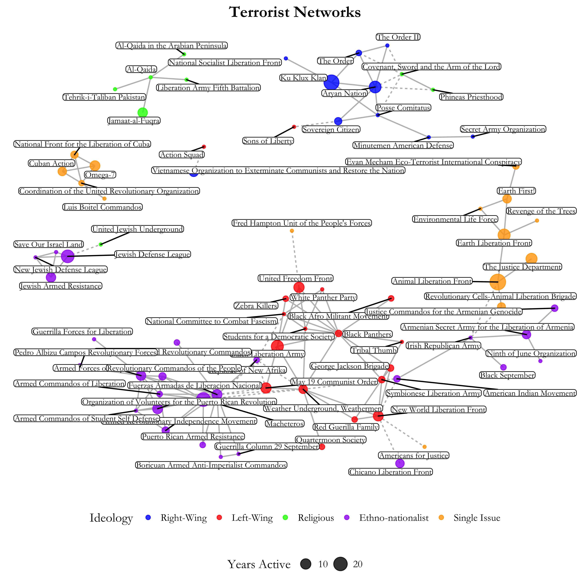

In the network visualisation, the colour of the nodes represent the ideology of a terrorist organisation, the size of the node represents the number of years the organisation has been active for, and the line type of each edge represents whether an edge is between nodes who subscribe to the same or different ideologies.
From the visualisation, we find terrorist networks are organised into one large interconnected component and five smaller disparate components. The five smaller disparate components are more or less homogenous by ideology and in the large interconnected component, terrorist organisations with the same ideology cluster together.
From the names of the terrorist organisations in the five smaller disparate components, we can roughly tell that they comprise a far-right White Nationalist group, a fundamentalist Islamic group, a Cuban ethno-nationalist group, a Zionist group and an anti-communist group.
In the large inter-connected node, we also see four distinct groups. The first group comprises a Puerto-Rican ethno-nationalist group; the second comprises a far-left group; the third comprises foreign militant organisations, and the fourth comprises environmental groups.
The visualisation also reveal that the longest-surviving organisations such as Macheteros and the Black Liberation Army are most central to their groups and the larger network.